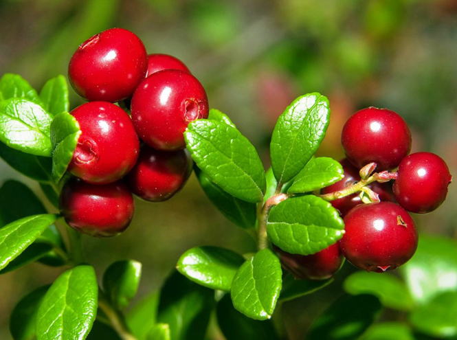
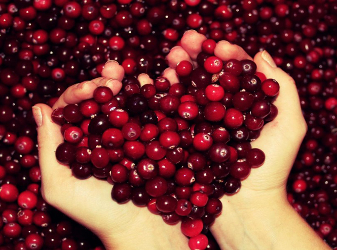
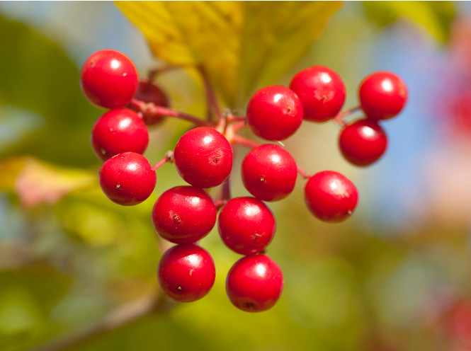
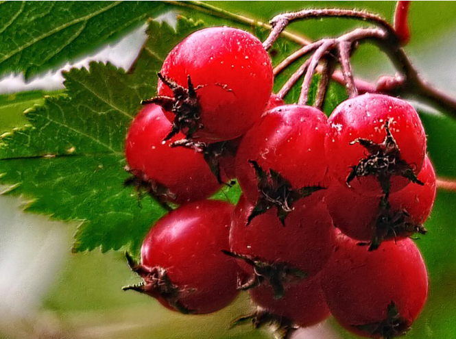
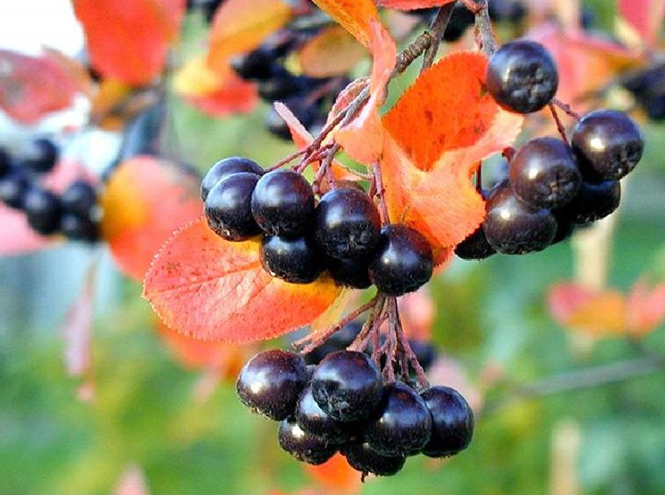
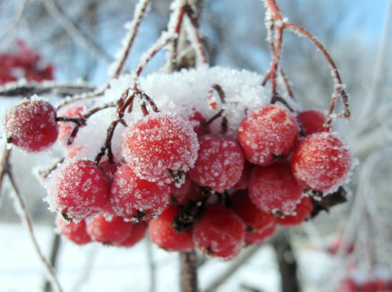
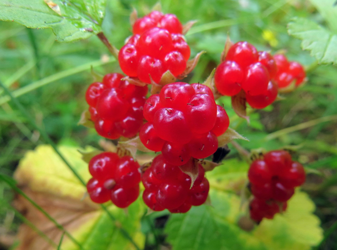
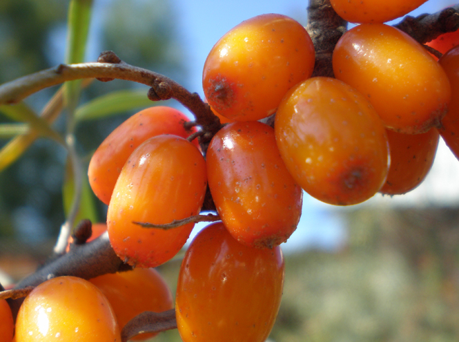

Брусника – первое средство
от повышенного кровяного
давления, и к тому же обладает
ещё одной полезной функцией –
утоляет жажду гораздо лучше
любого напитка. Кстати, не
только ягоды вечнозелёного
кустарника способны принести
пользу. Так, например, в листьях
брусники содержатся дубильные
соединения, благодаря
которым препараты на основе
листьев брусники оказывают
противовоспалительное и
бактерицидное действие на
организм.

Клюква – великолепный
антиоксидант, поскольку в
ягодах содержится большое
количество витамина С, а
так же солей калия. Эта ягода – первый
помощник при простуде. Клюква
предназначена и для тех, кто
страдает варикозным
расширением вен.

В калине содержится целый
набор уникальных и очень полезных
веществ. На Руси калину
считали символом женской
красоты и целомудрия, ведь
просто так к ней не подступишься.
Самый надежный способ справиться
с хитрой ягодой – смешать ее с
медом или сахаром.

Ягоды боярышника, похожие
на маленькие красные яблочки,
мы тоже привыкли воспринимать
как нечто декоративное. Между
тем на вкус они очень приятные. Из
боярышника делают экстракт
и настойку для уменьшения
возбудимости сердечной
мышцы при аритмии и других опасных
заболеваниях. Народная
медицина так и вовсе
рекомендует боярышник
от всего сразу: от кашля, одышки,
бессонницы и лихорадки.

Ягоды черноплодной рябины
и сок из них используют для
лечения и, что особенно важно,
профилактики
гипертонической болезни
и атеросклероза. Назначают
их при гастритах, а так же при некоторых
сосудистых заболеваниях.
Аронию так же применяют как
спазмолитическое,
сосудорасширяющее,
кровоостанавливающее,
кроветворное, аппетитное,
желчегонное и
мочегонное средство.

Ягоды очень богаты
витаминами,
органическими кислотами,
дубильными веществами и
аминокислотами. Они
способствуют выведению
токсинов, обладают
желчегонным и
противовоспалительным
свойствами. Иначе говоря,
достойны вашего внимания.
Рябиновая настойка, кстати,
не только для здоровья полезна, но
и настроение очень поднимает.

Костяника обладает целым
спектром полезных свойств! Сок из ягод
костяники способствует
улучшению обмена веществ,
укреплению стенок сосудов и
выводу токсинов и
холестерина из организма,
а настои из плодов растения могут
сработать в качестве
обезболивающего при болях
в области сердца. К тому же,
ягоды костяники обладают
природными
жаропонижающими
средствами, именно поэтому
часто врачи рекомендуют их
включить в основной список лекарств
при простуде с высокой
температурой.

Облепиха – это
поливитаминный комплекс
на ветке. Имея в запасе мешочек
замороженных ягод, можно забыть
о походах в аптеку. Самый
известный продукт из
облепихи – это ее масло,
обладающее
бактерицидными и
ранозаживляющими
свойствами, оно устраняет боль и
повреждения на коже и
слизистых оболочках. Мужчинам
рекомендуют облепиху
для повышения потенции.